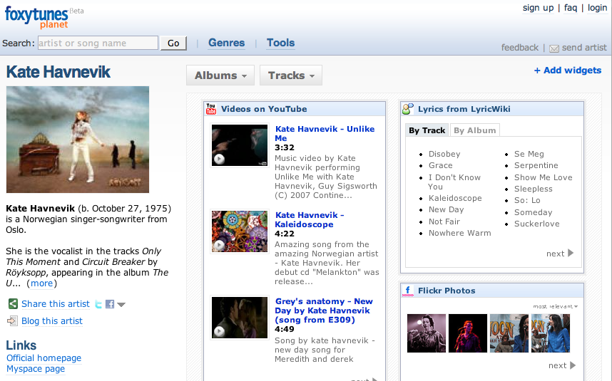

Foxytunes Planet
Foxytunes planet is music information aggregator. FoxyTunes Planet collects information from all sorts of web sources and displays them on a single page. They scrape lots of sources including: Wikipedia, Amazon, Last.fm, flickr, LyricWiki, HypeMachine, Youtube and lots more. You can customize your layout and add/remove various sources.
Foxytunes Planet tries hard to find the right info - but sometimes it misses the mark. Search for the band 'the the' and the flickr and youtube videos found are not related at all. Search for the band 'Blur' and the flickr images are ... well blurry.
Foxytunes Planet seems to play a bit fast and loose with other people's data - they don't restrict themselves to creative commons licensed photos from flickr for instance - lots of images shown are in the 'all rights reserved category'. They are also using data from sites like Last.Fm that have a policy of non-commercial use only. If FoxyTunes Planet is making money on Amazon or iTunes referrals then it seems to me that they would be in violation of these terms.

On the bright side, their use of LyricWiki is on the up-and-up since they're just using LyricWiki's open API.
Posted by Sean on January 29, 2008 at 12:38 PM EST #
Oh! Hey Paul! I didn't realize this was your blog until I looked at the header after my last comment. Small world :)
(I got here from a Google Alert).
Anywho... keep up the good work ;)
Posted by Sean on January 29, 2008 at 12:40 PM EST #